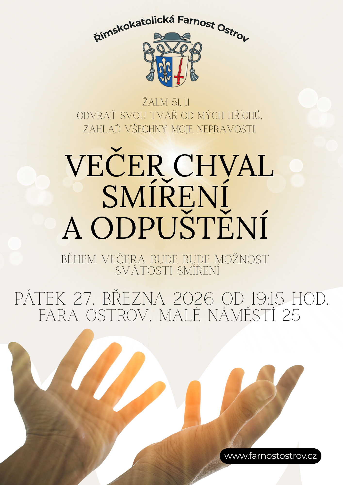

Římskokatolická
FarnostOstrov
Kostel sv. Michaela Archanděla a Panny Marie Věrné
Vítáme vás na webových stránkách ostrovské farnosti.
Jejich obsah se bude postupně rozšiřovat.
Římskokatolická
Kostel sv. Michaela Archanděla a Panny Marie Věrné
Vítáme vás na webových stránkách ostrovské farnosti.
Jejich obsah se bude postupně rozšiřovat.
Farní život

Tradiční součást oslav Zmrtvýchvstání Páně. Přineste své dary na připravený stoleček v přední části kostela — žehnání proběhne v závěru slavnostní mše.

Pěší putování pro požehnání všem obyvatelům Ostrovska — 26 km s modlitbou na vybraných místech města i okolí.

Pořad bohoslužeb během Svatého týdne a Velikonočního tridua — Zelený čtvrtek, Velký pátek, Vigilie a Neděle Zmrtvýchvstání.
Farní život
Liturgický život
